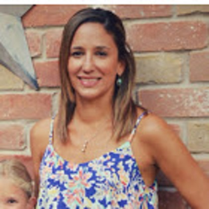

About Me
My name is Melissa Siddoway and I currently reside in Houston, Tx. I am an elementary school teacher working to become a computer programmer.
I graduated from the University of Texas at Austin with a BBA in Finance and minor in Accounting in 2006. I worked for a year as a Tax Consultant at Ryan & Company in Houston, Tx. I then received my alternative teaching certification and began my teaching career as a 5th grade Science Teacher in Aldine ISD. I worked in this position for 7 years before changing to an elementary school in Aldine ISD and working as a Math and Reading Interventionist. It was during my 3 years in this position that I began to realize my desire to learn about computer programming. As an interventionist, I worked with lots of student data. I also frequently needed data input from classroom teachers. Additionally, I was required to frequently email teachers. After finding this process to be quite tedius and inneficient, I began exploring what could be accomplished with Google Scripts. I quickly discovered how to create a script that could send an email through a Google spreadsheet. It was through this process of discovering ways to make my workflow much more efficient that I began to discover a fascination with coding. This fascination led me to the UT Bootcamp where I am loving learning how to "talk" to my computer and develop really cool things along the way. I am a dedicated, hard-working learner with a never give up attitude.
On a more personal note, I love running and have completed 5 half marathons with more on the horizon. In my free time I love to excercise, play with my 3 kids and my puppy Morgan, host game nights with friends, go biking, and go on outdoor adventures.